Ch2
Chapter 2 Review Questions
SECTION 2.1¶
R1. List five nonproprietary Internet applications and the application-layer protocols that they use.
the web: HTTP
file transfer: FTP
remote login: Telnet
emial: SMTP
BitTorrent file sharing: BitTorrent protocol
R2. What is the difference between network architecture and application architecture?
network architecture: refers to the organization of the communication process into layers(five-layer Internet Architecture)
application architecture: designed by an application developer, it shows the broad structure of the application(P2P)
R3. For a communication session between a pair of processes, which process is the client and which is the server?
The process which initiates the communication is the client,
the process that waites to be contacted is the server.
R4. For a P2P file-sharing application, do you agree with the statement, “There is nonotion of client and server sides of a communication session”? Why or why not?
no.
in P2P file-sharing application, the peer that is receiving a file is typically the client and the peer that is sending file is typically the server.
R5. What information is used by a process running on one host to identify a process running on another host?
destination IP address and the port number of the socket in destination process
R6. Suppose you wanted to do a transaction from a remote client to a server as fast as possible. Would you use UDP or TCP? Why?
UDP. It is more faster.
With UDP, the transaction can be completed in 1 RTT. The cilent sendsthe transaction request into a UDP socket, and the server sends the replay back.
With TCP, a minimum of 2 RTTs are needed. one to set-up the TCP connection, and another for client to send the request and for the server to send back.
R7. Referring to Figure 2.4, we see that none of the applications listed in Figure 2.4 requires both no data loss and timing. Can you conceive of an application that requires no data loss and that is also highly time-sensitive?
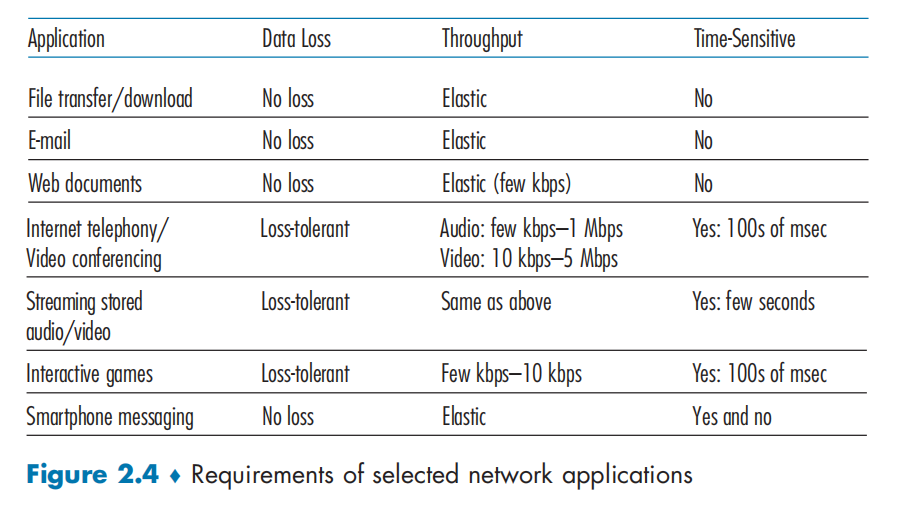
Remote word processing.
For example, Google docs.
However, because Google docs runs over the Internet by using TCP, time guarantees are not provided.
R8. List the four broad classes of services that a transport protocol can provide. For each of the service classes, indicate if either UDP or TCP (or both) provides such a service.
reliable data transfer: TCP do, UDP do not
a guarantee that a certain value of throughput will be maintained. neither
a guarantee that the data will be delivered with a specified amount of time. neither
confidentiality. neither
R9. Recall that TCP can be enhanced with TLS to provide process-to-process security services, including encryption.
Does TLS operate at the transport layer or the application layer?
If the application developer wants TCP to be enhanced with TLS, what does the developer have to do?
TLS operates between the application protocol layer and the TCP/IP layer.
If an application developer wants TCP to be enhanced with TLS, they must implement the TLS protocol in their application code. This involves establishing a secure connection between the client and server using a series of handshakes and cryptographic computations 1. Once the secure connection is established, the application data can be sent over the encrypted channel 1.
SECTIONS 2.2–2.5¶
R10. What is meant by a handshaking protocol?
a handshaking protocol is a process of communication between two entities that eatsblishes a connction between them.
used to verify the quality or speed of the connection
R11. Why do HTTP, SMTP, and IMAP run on top of TCP rather than on UDP?
they need to guarantee the data be received in correct order and without loss. TCP can do this but UDP cannot.
R12. Consider an e-commerce site that wants to keep a purchase record for each of its customers. Describe how this can be done with cookies.
when the user first visits the site, the server creates a unique identification number, creates an entry in its database, and returns the identification number as a cookie number. The cookie number is stored on the user's host and is manage by the browser.
During each subsequent visit the brower sends the cookie number back to the site.
Thus the sites knows the user is visiting the site.
R13. Describe how Web caching can reduce the delay in receiving a requested object. Will Web caching reduce the delay for all objects requested by a user or for only some of the objects? Why?
Web caching can bring the desired content “closer” to the user, possibly to the same LAN to which the user’s host is connected. Web caching can reduce the delay for all objects, even objects that are not cached, since caching reduces the traffic on links.
R14. Telnet into a Web server and send a multiline request message. Include in the request message the If-modified-since: header line to force a response message with the 304 Not Modified status code.
R15. List several popular messaging apps. Do they use the same protocols as SMS?
A list of several popular messaging apps: WhatsApp, Facebook Messenger, WeChat, and Snapchat. These apps use the different protocols than SMS.
SMS (Short Message Service) is a protocol used for sending text messages between mobile devices 3. While some messaging apps such as WhatsApp allow users to send SMS messages, most messaging apps use their own proprietary protocols for sending messages over the internet 4. Therefore, SMS is not used by most popular messaging apps.
R16. Suppose Alice, with a Web-based e-mail account (such as Hotmail or Gmail), sends a message to Bob, who accesses his mail from his mail server using IMAP. Discuss how the message gets from Alice’s host to Bob’s host. Be sure to list the series of application-layer protocols that are used to move the message between the two hosts.
s1: Alice's host -> Alice mail server, over HTTP
s2: Alice's host 0>Bob's mail server over SMTP
s3: Bob transfer the message from his mail server to his host over POP3.
R17. Print out the header of an e-mail message you have recently received. How many Received: header lines are there? Analyze each of the header lines in the message.
R18. What is the HOL blocking issue in HTTP/1.1? How does HTTP/2 attempt to solve it?
In HTTP/1.1, the Head-of-Line (HOL) blocking issue occurs when a client sends multiple requests over the same TCP connection, but the responses must arrive in order 12. This means that if a large response is delayed, all subsequent responses must wait before they can be delivered to the client 1. This can lead to poor performance and slow page load times 1. HTTP/2 attempts to solve the HOL blocking issue by using a technique called request multiplexing 1. In HTTP/2, multiple requests and responses can be sent over a single TCP connection at the same time 3. This means that if a large response is delayed, other responses can still be delivered to the client without waiting for the delayed response 3. This can help improve performance and reduce page load times 3. In addition to request multiplexing, HTTP/2 also uses other techniques such as server push, header compression, and flow control to further improve performance and reduce latency 3.
在HTTP/1.1中，当客户端在同一个TCP连接上发送多个请求，但是响应必须按顺序12到达时，就会发生行首阻塞问题。这意味着，如果一个大的响应被延迟，所有后续响应必须等待，然后才能交付给客户机1。这可能导致较差的性能和较慢的页面加载时间。 HTTP/2试图通过使用一种称为请求多路复用的技术来解决HOL阻塞问题。在HTTP/2中，多个请求和响应可以同时通过单个TCP连接发送。这意味着，如果一个大响应延迟了，其他响应仍然可以被传递到客户端，而无需等待延迟的响应3。这有助于提高性能并减少页面加载时间。 除了请求多路复用之外，HTTP/2还使用其他技术，如服务器推送、报头压缩和流量控制，以进一步提高性能并减少延迟。
R19. Is it possible for an organization’s Web server and mail server to have exactly the same alias for a hostname (for example, foo.com)? What would be the type for the RR that contains the hostname of the mail server?
Yes an organization’s mail server and Web server can have the same alias for a host name. The MX record is used to map the mail server’s host name to its IP address.
R20. Look over your received e-mails, and examine the header of a message sent from a user with a .edu e-mail address. Is it possible to determine from the header the IP address of the host from which the message was sent? Do the same for a message sent from a Gmail account.
You should be able to see the sender's IP address for a user with an .edu email address. But you will not be able to see the sender's IP address if the user uses a gmail account.
SECTION 2.5¶
R21. In BitTorrent, suppose Alice provides chunks to Bob throughout a 30-second interval. Will Bob necessarily return the favor and provide chunks to Alice in this same interval? Why or why not?
not necessary.
Alice has to be the top4 neighbors of Bob for Bob to send out chunks to her, this might not occur even if Alice provides chunks to Bob throughout a 30s interval.
R22. Consider a new peer Alice that joins BitTorrent without possessing any chunks. Without any chunks, she cannot become a top-four uploader for any of the other peers, since she has nothing to upload. How then will Alice get her first chunk?
Recall that in BitTorrent, a peer picks a random peer and optimistically unchokes the peer for a short period of time. Therefore, Alice will eventually be optimistically unchoked by one of her neighbors, during which time she will receive chunks from that neighbor.
R23. What is an overlay network? Does it include routers? What are the edges in the overlay network?
The overlay network in a P2P file sharing system consists of the nodes participating in the file sharing system and the logical links between the nodes. There is a logical link (an “edge” in graph theory terms) from node A to node B if there is a semi permanent TCP connection between A and B. An overlay network does not include routers.
SECTION 2.6¶
R24. CDNs typically adopt one of two different server placement philosophies. Name and briefly describe them.
One server placement philosophy is called Enter Deep, which enter deep into the access networks of Internet Service Providers, by deploying server clusters in access ISPs all over the world. The goal is to reduce delays and increase throughput between end users and the CDN servers. Another philosophy is Bring Home, which bring the ISPs home by building large CDN server clusters at a smaller number of sites and typically placing these server clusters in IXPs (Internet Exchange Points).
This Bring Home design typically results in lower maintenance and management cost, compared with the enter-deep design philosophy.
R25. Besides network-related considerations such as delay, loss, and bandwidth performance, there are other important factors that go into designing a CDN server selection strategy. What are they?
SECTION 2.7¶
R26. In Section 2.7, the UDP server described needed only one socket, whereas the TCP server needed two sockets. Why? If the TCP server were to support n simultaneous connections, each from a different client host, how many sockets would the TCP server need?
UDP: there is no welcoming socket, all data from different clients enters the server through this one socket.
TCP: there is a welcoming socket, each time a client initiates a connection to the server, a new socket is created.
n connections-->n+1 socket
R27. For the client-server application over TCP described in Section 2.7, why must the server program be executed before the client program? For the client-server application over UDP, why may the client program be executed before the server program?
TCP: as soon as the client is executed, it attempts to initiate a TCP connection with the server. If TCP server is not running, then the client will fail to make a connection
UDP: the client does nit initiate connections immediately upon execution.
Problem¶
P10. Consider a short, 10-meter link, over which a sender can transmit at a rate of 150 bits/sec in both directions. Suppose that packets containing data are 100,000 bits long, and packets containing only control (e.g., ACK or handshaking) are 200 bits long. Assume that N parallel connections each get 1/N of the link bandwidth. Now consider the HTTP protocol, and suppose that each downloaded object is 100 Kbits long, and that the initial downloaded object contains 10 referenced objects from the same sender. Would parallel downloads via parallel instances of non-persistent HTTP make sense in this case? Now consider persistent HTTP. Do you expect significant gains over the non-persistent case? Justify and explain your answer.
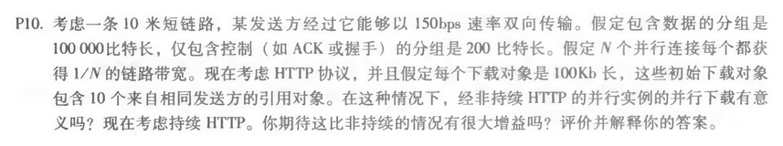
没有本质差别，带宽太小了

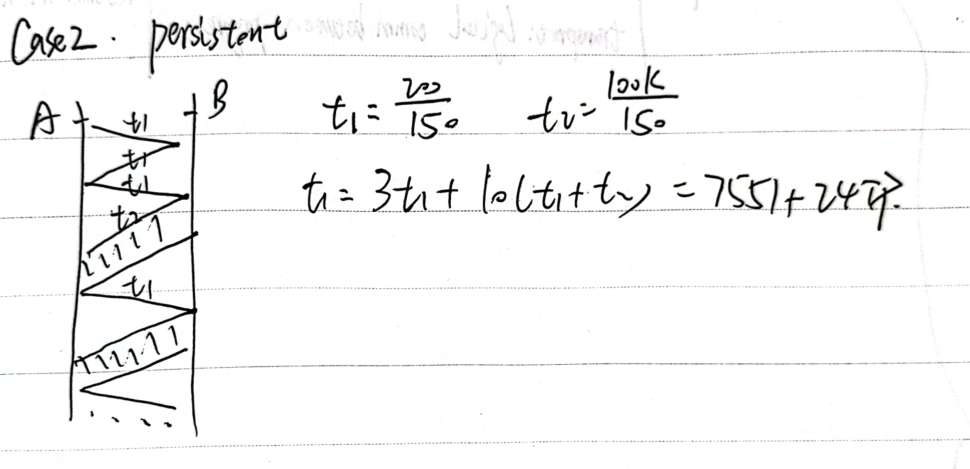
R22.
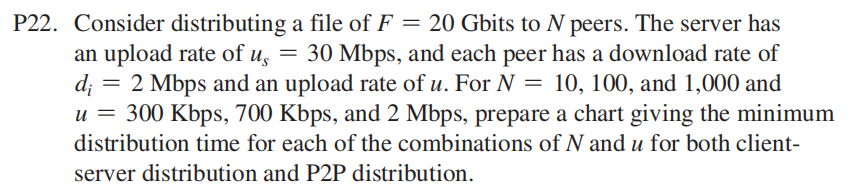
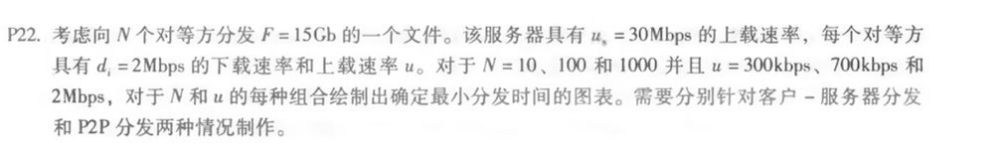
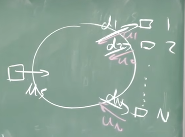
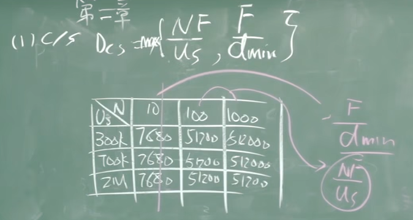
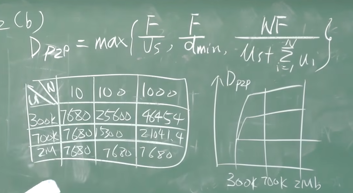
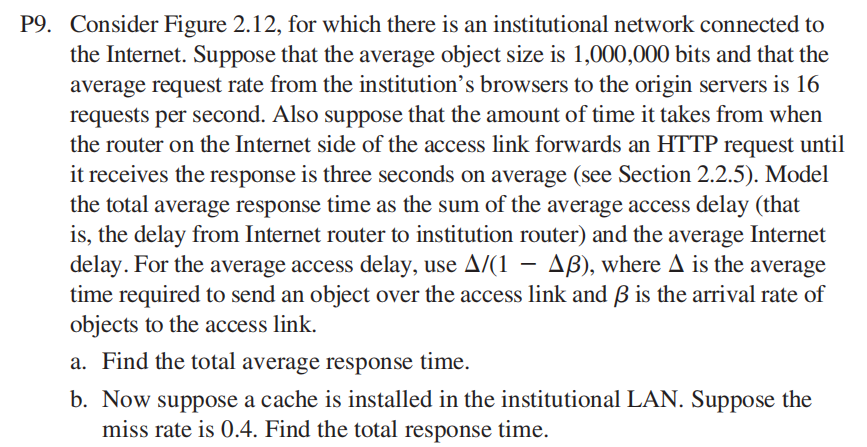
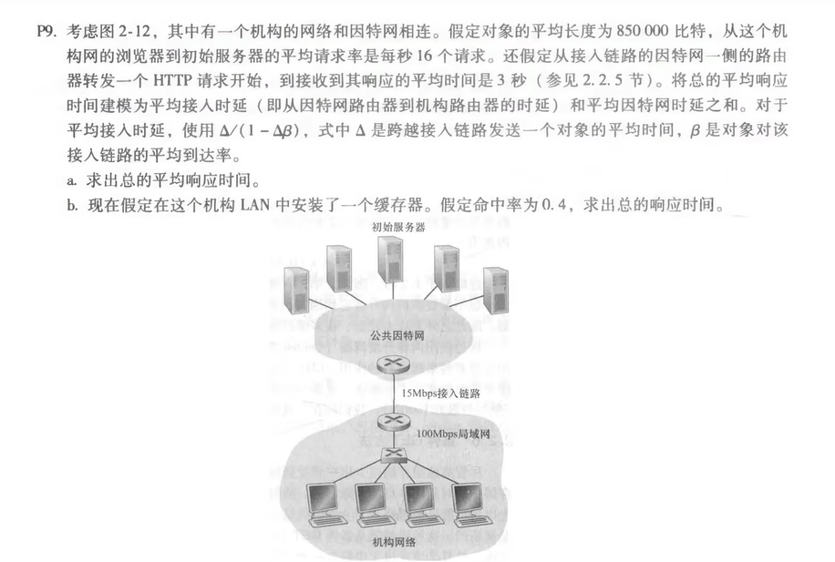
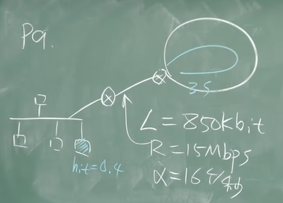
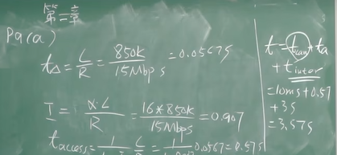
听不懂
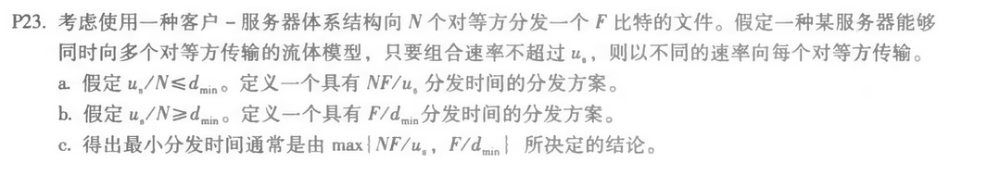
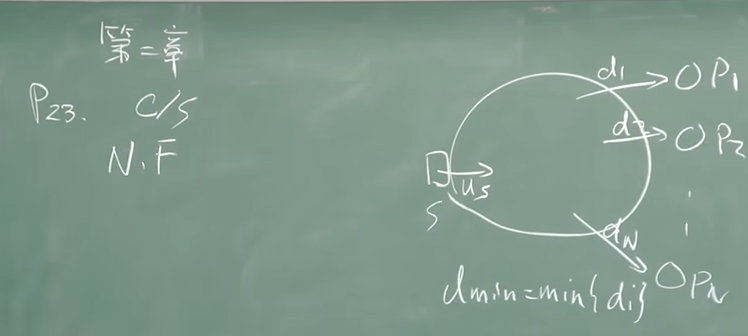
听不懂
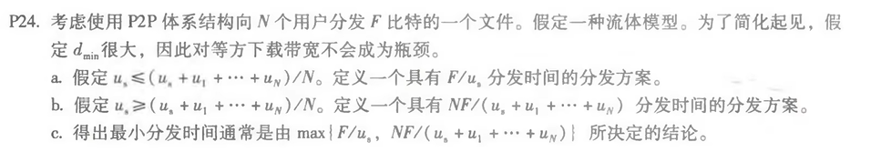